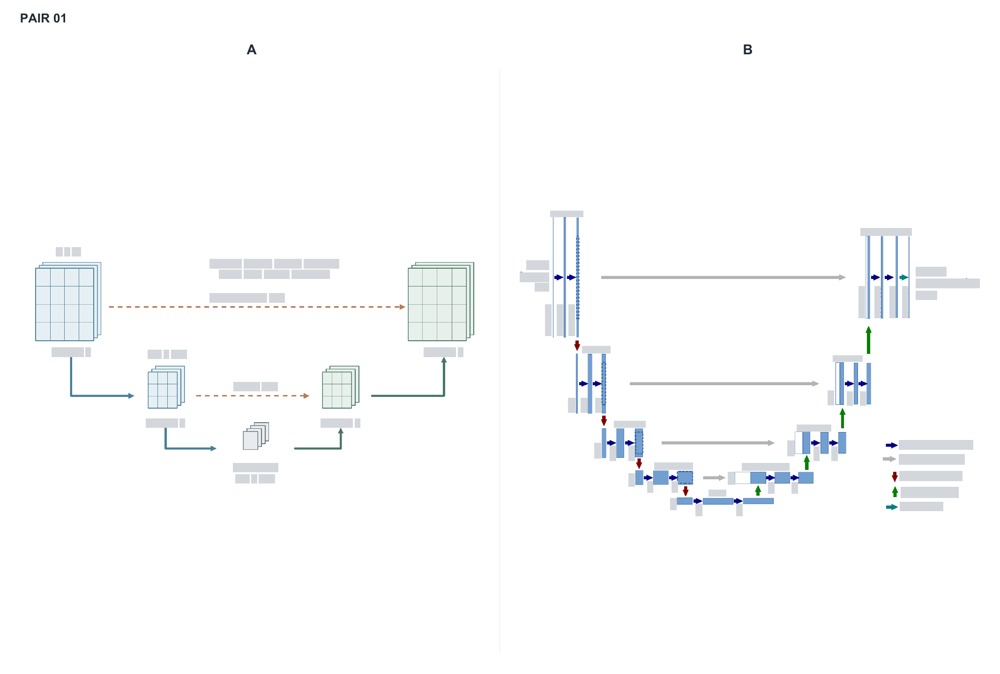
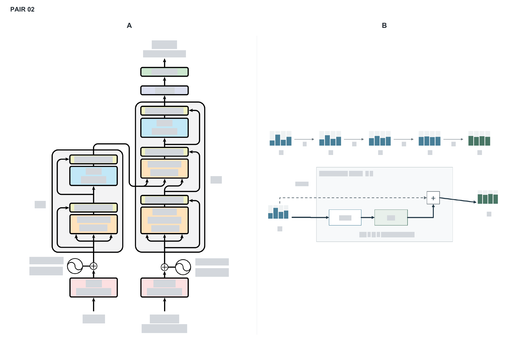
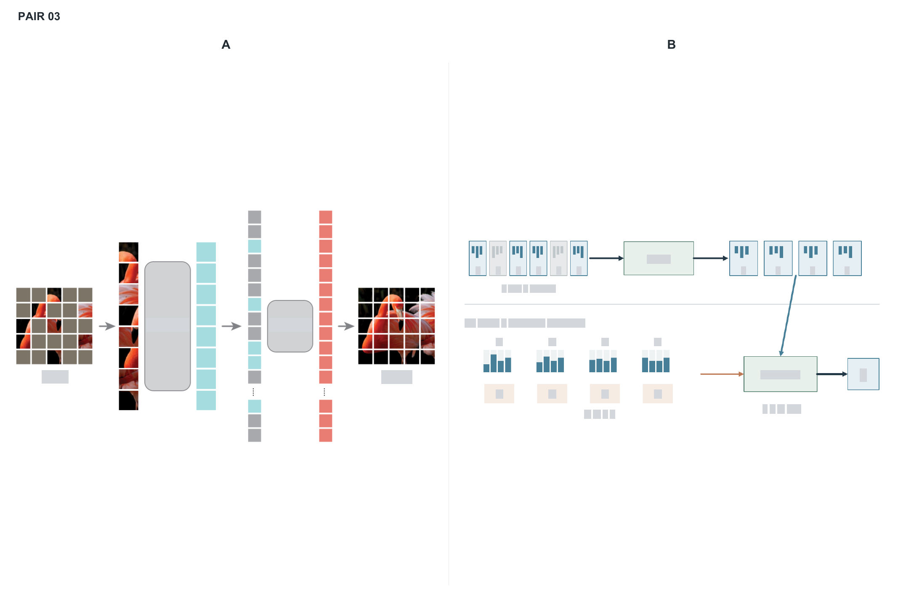
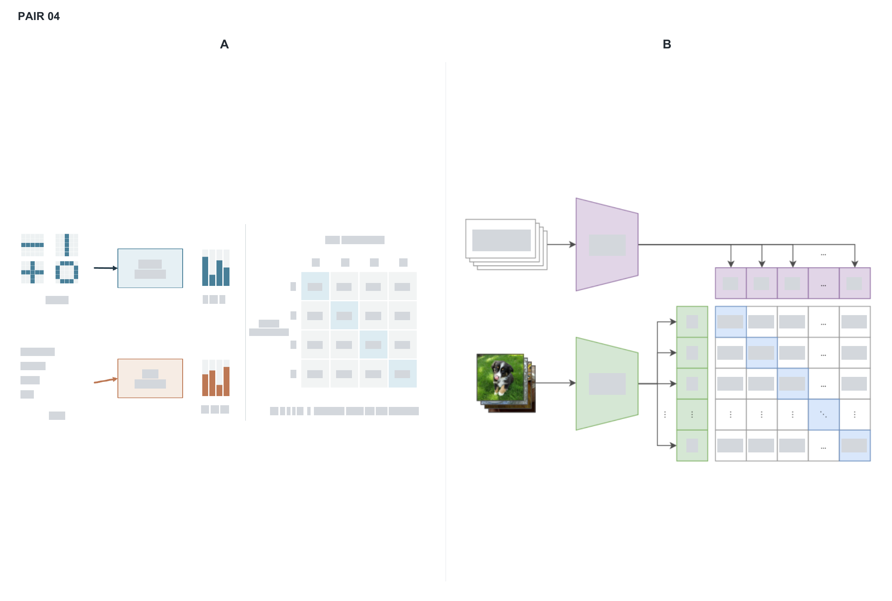

각 쌍에는 실제 논문의 figure와 생성본이 하나씩 있습니다. 출처와 내부 라벨을 가리고 위치를 무작위로 정했습니다. 회색 영역은 가림막입니다. 정답을 보기 전에 A와 B를 직접 비교할 수 있습니다.




검증 에이전트 응답 원문 · 정답 대조·해석·출처
유명한 구도에 대한 기억, 다른 방법의 정보량, 라벨 마스킹이 판단에 영향을 줄 수 있습니다. 출처 판별 성공률은 품질 점수가 아닙니다.